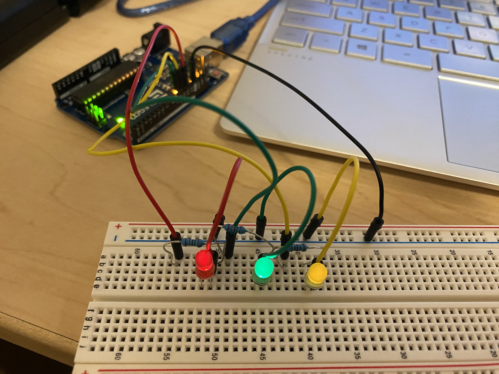
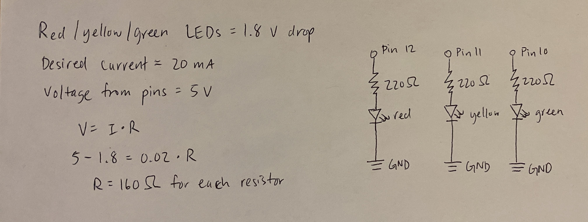

Yuming's Assignment 1!

This is the circuit that I built with three LEDs. I picked red, yellow, and green because they have the same voltage drop.
This is my schematic. I picked 220 ohm resistors because it was the lowest resistor that I had above 160 ohms which I calculated as the minimum resistance for a current of 20 mA.

This gif shows the three LEDs blinking independently every half second.
Here is my Arduino code:
// the setup function runs once when you press reset or power the board
void setup() {
// initialize digital pin LED_BUILTIN as an output.
pinMode(12, OUTPUT); //sets digital pin 12 as an output, corresponds to red
pinMode(11, OUTPUT); // sets digital pin 11 as an output, corresponds to yellow
pinMode(10, OUTPUT); // sets digital pin 10 as an output, corresponds to green
}
// the loop function runs over and over again forever
void loop() {
for (int pin = 10; pin < 13; pin++) { // loop from pin 10 to pin 12
digitalWrite(pin, HIGH); // turn the LED on (HIGH is the voltage level)
delay(500); // wait for half a second
digitalWrite(pin, LOW); // turn the LED off by making the voltage LOW
delay(500); // wait for half a second
}
}